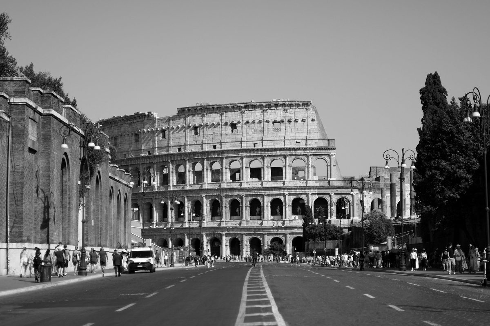

Day 1 — Arrival in Rome
Thursday, May 21, 2026

PLACES & MAP LINKS — tap any place to open in Google Maps
📍 Airport — 📍 Rome Fiumicino Airport (FCO) — Terminal 3
Daytrip driver meets you at arrivals. Ref: P4Y4Q565. Pickup at 11:30 AM.
🏨 Hotel — 📍 Aleph Rome Hotel, Curio Collection
Via di San Basilio 15. Booked.
🍴 Dinner — 7:30 PM — 📍 Hostaria Romana
Via del Boccaccio 1. ~5 min walk from Aleph. Reserved.
SIDE QUESTS
⚡ 📍 Capuchin Crypt of Santa Maria della Concezione (parents can join)
4,000 monks' bones arranged into chandeliers and elaborate designs across 6 chapels. Strange, memorable, deeply Roman. Maddison will be transfixed. Mostly accessible — main level. €10 entry.
⚡ 📍 Galleria Doria Pamphilj (parents can join)
Private aristocratic palace with Velázquez's iconic Pope Innocent X portrait, plus Caravaggio and Raphael. Audio guide is narrated by the current prince. Quiet, atmospheric, wheelchair-accessible. Rome's best-kept secret.
⚡ 📍 Galleria Sciarra hidden Liberty passage (parents can join)
Hidden covered passage with stunning Art Nouveau painted ceilings showing scenes of female virtues. Most tourists walk right past. Free, quick, beautiful. Worth pairing with a nearby café.
⚡ 📍 Sant'Ignazio Loyola trompe-l'œil ceiling (parents can join)
The church with the painted fake dome — Andrea Pozzo's 17th-century trompe-l'œil that fools the eye into seeing a real dome. Stand on the marked yellow circle in the floor to see the full effect. Free, accessible.
⚡ Long rest at Aleph
After the flight + EES + arrival, an honest nap and slow unpacking is exactly the right move. Don't overload day one. Hostaria Romana is 5 min walk when you're ready.
CONTACTS
Daytrip booking ref: P4Y4Q565
Aleph Rome phone: +39 06 422 901
Hostaria Romana phone: +39 06 474 5284
NOTES
- Don't take Uber from FCO — Daytrip driver is waiting at arrivals with a sign.
- Aleph is inside ZTL — no driving, the hotel arranges access. Daytrip handles this.
- After check-in, aim to nap if jet-lagged. Don't push the afternoon.
- Hostaria Romana is walking distance — no taxi needed.
- Mention wheelchair at check-in — Aleph can flag accessible needs.